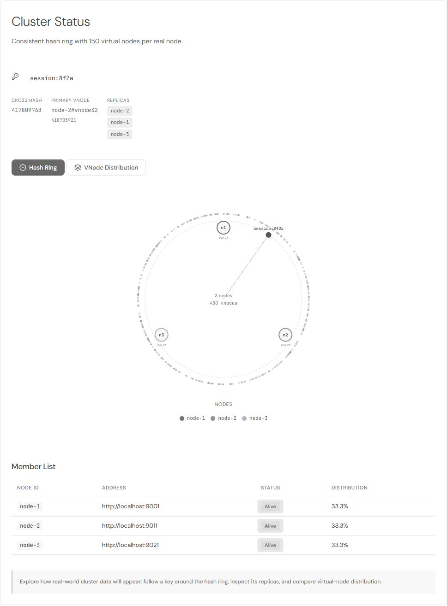

Custom LSM storage
A write-ahead log, MemTables, and sorted SSTables form the persistence path, supported by Bloom filters, caching, and background compaction.
DISTRIBUTED SYSTEMS / GO + REACT
From the storage engine
to the whole cluster.
A Dynamo-style distributed key-value store that brings local persistence, replication, and recovery into one inspectable system.

01 / THE IDEA
What happens when a process restarts? A replica falls behind? A node disappears? TurboDynamo brings these questions into the same system, from the local write path to cluster-wide coordination.
The dashboard makes those internals approachable. Demo mode runs a browser-local playground; Live mode connects to the Go backend for real data and telemetry.
02 / UNDER THE HOOD
A write-ahead log, MemTables, and sorted SSTables form the persistence path, supported by Bloom filters, caching, and background compaction.
Any node can coordinate a request. CRC32 consistent hashing with virtual nodes determines placement and replica order.
Replica counts and read/write acknowledgement requirements expose the tradeoffs between consistency and availability. Vector clocks track version relationships.
WAL replay restores logged writes. Read repair, hinted handoff, and Merkle-tree reconciliation help bring divergent replicas back together.
Gossip exchanges cluster state. Phi-accrual failure detection evaluates heartbeat behaviour to assess node health.
HTTP, gRPC, and the kvctl CLI provide access. Prometheus metrics, tracing support, and a React dashboard expose system behaviour.
03 / THE REQUEST JOURNEY
04 / SEE THE SYSTEM
The cluster view calculates a key’s CRC32 position in the browser, shows its primary virtual node and replica order, and visualises virtual-node distribution.
The hosted demo uses an example topology. Real replication and backend telemetry require a running Go server.
Explore the dashboard ↗
05 / ENGINEERING & PROJECT SCOPE
The repository includes race-detection tests, static analysis, cross-platform builds, a three-node integration workload, and benchmark tooling. The GitHub workflow shows the current check results.
TurboDynamo builds on the Kasoku project, with restored application sources, consistent branding, runtime fixes, an interactive frontend showcase, and CI repairs.
Project context & documentation ↗